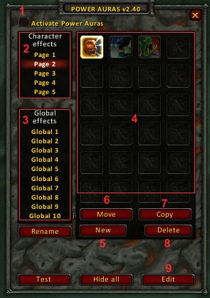
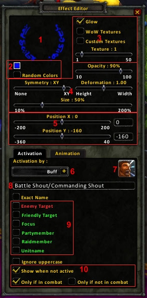
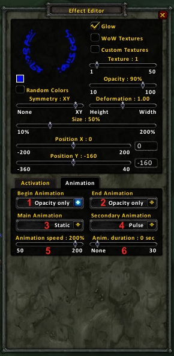

|  |
1 = Das AddOn an oder ausschalten. 2 = Auras nur für diesen Charakter. 3 = Auras für alle Charaktere. 4 = Auras auf dieser Seite. 5 = Erstellt eine neue Aura. 6 = Verschiebt eine Aura zu einer Seite nach Wahl. 7 = Kopiert eine Aura zu einer Seite nach Wahl. Kann auch die gleiche Seite sein. 8 = Löscht die ausgewählte Aura. Geht nur mit gedrückter STRG-Taste, um unabsichtliches löschen zu vermeiden. 9 = Öffnet den Effekt-Editor für die ausgewählte Aura. |
|
Man erstellt sich also erstmal mit "Neu" eine neue Aura. Der Effekt Editor öffnet sich und man sieht eine Grafik im Interface. |
|
|  |
1 = Die Ansicht der Grafik, ohne Animation. Einfach die Bilddatei. 2 = Farbeinstellungen 3 = Die Grafikauswahl. Bei Glow werden Bereiche transparent die zu dunklere Töne hingehen. Will man eine schwarze Farbe benutzen muss man es deaktivieren. Bei WoW Textures kann man ausgewählte Grafiken vom Spiel benutzen. Bei Custom Textures kann man eigene Grafiken im Ordner /AddOns/PowerAuras/Custom/ auswählen. Man muss dann den Dateinamen reinschreiben in das Textfeld was erscheint. 4 = Die Anzeigeeinstellungen der Grafik. Bissl rumspielen, dann weiss man was was macht. :) 5 = Positionseinstellung der Grafik/Aura. Wenn man ganz nach links oder rechts geregelt hat, geht der Regler wieder in die Mitte und man kann nochmals nachregeln. Genau Positionangeben kann man rechts eingeben. 6 = Das AuswahlMenu für das Event welches man überwachen will. Später mehr dazu. 7 = Das Icon des Buff/Debuff/Fähigkkeit, welches gespeichert wird beim ersten auftreten des Events 8 = Der Name des Buff/Debuff/Fähigkeit. Nur ein Teil vom Namen oder mehrere Namen gehen auch. Siehe Bild 9 = Das "Objekt" welches man überwachen möchte. Wenn keins ausgewählt ist man selber das Objekt. Focus geht nur, wenn ihr ein Ziel gefokust habt. 10 = Anzeigeoptionen wann die Grafik angezeigt werden soll. ALso zB. das die Grafik da ist, wenn gerade das Event nicht da ist. |
|
Also man hat eine neue Aura erstellt und hat sich eine Grafik ausgesucht, Farbe, Anzeige und Position. Dann wählt man unten aus bei "6", was man eigentlich überwacht haben will. Also nehmen wir mal an ich will wissen wann ich ein "Erneuern" auf mir hab. Damit ich sofort weiss, gleich kommt "Stille" und du hast kein HoT.ˆˆ Also wähle ich aus "Buff" und schreibe in das Textfeld unten dran: "Erneuern" oder "Renew" kA wie der HoT auf Deutsch heisst genau. :) Dann hake ich unten nix ab, weil ich ja meinen Char überwachen will. Ganz unten könnt ich noch sagen, das es nur wichtig ist wenn ich im Kampf bin. Also Haken dran bei "Nur im Kampf". Das war es schon. Aber halt! Wo sind die phaten An1m4t1onen?ˆˆ Man klickt den Reiter "Animationen" an. Darauf wäre jetzt niemand gekommen, oda? |
|
|  |
So jetzt schnell zum Ende... 1 = Einblendanimation 2 = Ausblendanimation 3 = Hauptanimation 4 = 2t Animation, stapelt sich einfach über die Hauptanimation. 5 = Animationsgeschwindigkeit (Stroboskop bittesehr) 6 = Animationsdauer. Bei "Keine" ist die Animation und die Grafik solange da wie das Event. |
| So und jetzt HF. | |